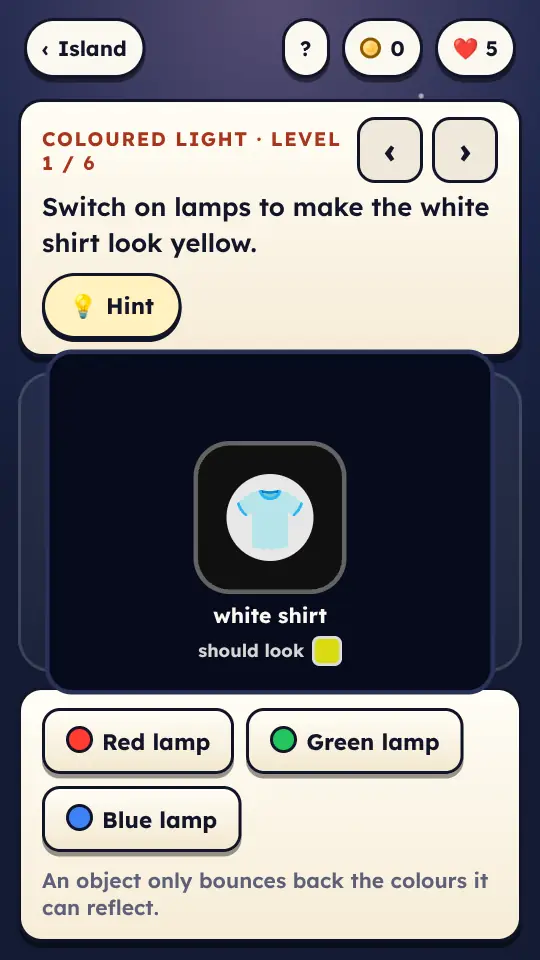

All labs › Colour › Coloured Light
Colour lab · Kesar's Colour Studio
Coloured Light
रंगीन रोशनी · चीज़ें रंगीन क्यों दिखती हैं
Switch red, green and blue lamps on and off and see how coloured objects change. A red apple can look black, and a white shirt can look any colour.
- Colour
- Inventor · ages 10+
- 6 levels
- English · हिंदी
- Free, no sign-up

How it works
Light and coloured things
- Switch the red, green and blue lamps on and off.
- A red apple only bounces back red light. With no red lamp it looks black.
- Match each object to the small "should look" colour beside it.
Stuck? Every level has a hint, and a "Show me" walk-through.
Why it works
The big idea
Objects are picky mirrors: a red apple bounces back only red light and soaks up the rest. If no red light shines on it, there is nothing for it to bounce back, so it looks black.
What children learn
Skills in this lab
- We see colour from the light an object reflects
- Why objects change colour under coloured light
- White light contains red, green and blue
For parents and teachers
This lab is in the Inventor band (ages 10+). Each player picks a band, and sees only the labs made for it.
Curio Island is free in the browser with no sign-up. Progress is saved on this device only. Ads are child-safe and non-personalised, and never appear inside a lab.
Part of Kesar's Colour Studio on the island. 6 levels to finish.